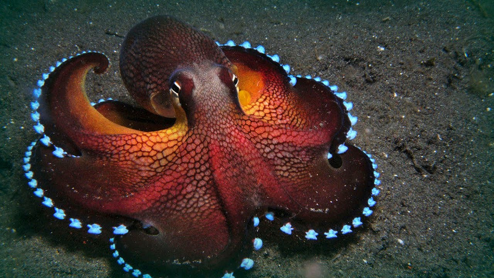

It has eight arms, three hearts — and a plan. Scientists aren’t sure how the cephalopods got to be so
intelligent.
By Carl Zimmer
Nov. 30, 2018
To demonstrate how smart an octopus can be, Piero Amodio points to a YouTube video. It shows an octopus pulling
two halves of a coconut shell together to hide inside. Later the animal stacks the shells together like nesting
bowls — and carts them away.
“It suggests the octopus is carrying these tools around because it has some understanding they may be useful in
the future,” said Mr. Amodio, a graduate student studying animal intelligence at the University of Cambridge in
Britain.
But his amazement is mixed with puzzlement.
For decades, researchers have studied how certain animals evolved to be intelligent, among them apes,
elephants, dolphins and even some birds, such as crows and parrots.
But all the scientific theories fail when it comes to cephalopods, a group that includes octopuses,
squid and
cuttlefish. Despite feats of creativity, they lack some hallmarks of intelligence seen in other species.
“It’s an apparent paradox that’s been largely overlooked in the past,” said Mr. Amodio. He and five other
experts on animal intelligence explore this paradox in a paper published this month in the journal Trends in
Ecology and Evolution.
For scientists who study animal behavior, intelligence is not about acing a calculus test or taking a car apart
and putting it back together. Intelligence comprises sophisticated cognitive skills that help an animal thrive.
That may include the ability to come up with solutions to the problem of finding food, for example, or a knack
for planning for some challenge in the future. Intelligent animals don’t rely on fixed responses to survive —
they can invent new behaviors on the fly.
To measure animal intelligence, scientists observe creatures in the wild — watching a dolphin stick a sponge on
its beak to avoid getting cuts from sharp rocks and coral, for example. Or they bring animals into the lab and
offer them puzzles to solve, such as rewarding crows when they learn to rip paper into strips of just the right
size.
Only a few species stand out in these studies, and by comparing them, scientists have identified some shared
factors. The animals have big brains relative to their body size, they live for a long time, and they can form
long-lasting social bonds.

An image of an octopus via youtube. https://www.youtube.com/watch?v=rX-YiYHahoo.